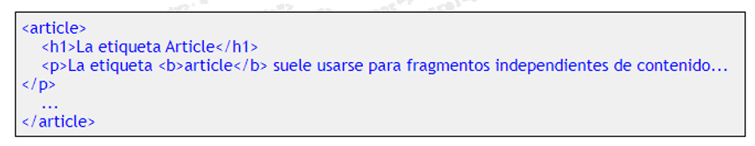
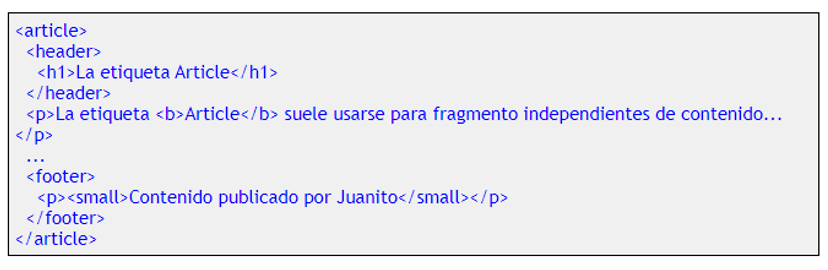

Etiqueta Section
La etiqueta section se utilizan para encerrar el código correspondiente a una sección genérica dentro de un documento o aplicación. Normalmente, un bloque de texto al que perfectamente le podríamos colocar un título o encabezado. Además, todo el contenido que engloba ha de guardar cierta relación entre sí.
Para verlo más claro, un ejemplo de bloque que podríamos encerrar entre etiquetas section podría ser las últimas novedades de la web o del foro. No seria idonea esta etiqueta por tanto para encerrar un bloque de publicidad, por ejemplo, o bloques de cosas diferentes unas de otras. Dice la norma que si es algo que bien pudiera ser sindicable, tiene todas las papeletas de ser candidato para pertenecer a un section.
Recuerda que no se debe usar para englobar un bloque cualquiera de código simplemente porque necesitas encerrarlo dentro de algo para aplicarle así estilos CSS o algún Script. Si el único motivo para encerrar un bloque de código es el de poder aplicarle lo anterior, no tiene sentido aplicarle una de estas nuevas etiquetas. En su lugar se puede y debe usar un DIV de toda la vida. Veremos ejemplo más adelante si te estás liando. Solo sigue leyendo y lo irás pillando al terminar de ver todas las etiquetas. Otra regla que podemos usar para saber si un bloque de código o un elemento de una página web debe encerrarse entre esta etiqueta es el preguntarse.... si la web fuera un libro.... estaría ese elemento en el indice inicial del mismo? Si la respuesta es SI, es buen candidato para section. Dentro de una página web por tanto, pueden existir varios section, cómo no (en un libro suelen existir varias secciones en el índice, no?). Es más, dentro de un section pueden haber otros section secundarios y así sucesivamente (o acaso en un libro no hay secciones, subsecciones, etc, en el índice?).
Si una sección es algo que podría tener un título, es lógico pensar además que lo primero que encontraremos dentro es un título (h1) y después una etiqueta (p) con el contenido de la sección. Otra ayudita para decidir si una parte de una página web es o no un section, es tener en cuenta que los section suelen ser temáticos. Suelen englobar contenido que trata de un mismo tema. Si por ejemplo en una página de una web hay un apartado hablando de diversos productos y otra parte en la que se habla tan solo de las formas de pago, esa segunda parte podría englobarse dentro de un section. Se le podria asignar el encabezado "Formas de Pago", su contenido trata de un tema concreto, es algo que podría estar presente en un índice de la web... decididamente es un section. Lo ves? Dentro de un section grandote, pueden existir otros section hijo. Imagina una web de un periódico que divide las noticias de su portada en noticias de Europa, de Asia, de Estados Unidos, etc. Podríamos pensar que son secciones temáticas, a las que se les puede colocar un encabezado tipo "Noticias Europeas", etc, cierto? Por lo que se podrían tomar como section. Pero aún dentro de cada una de esas section podríamos englobar todas las noticias de deportes dentro de Europa y colocarlas en un section hijo de Europa, titulado "Noticias Deportivas en Europa". Luego podemos encontrarnos con varios section dentro de un section. Conoces los blogs? En un blog, todo el conjunto formado por una entrada del autor, podría encerrarse dentro de un section (normalmente tienen un titulo y luego algunos párrafos). Luego, todo el conjunto con los comentarios escritos por los visitantes, podría formar otro section distinto, titulado "comentarios" por ejemplo. Lo vamos viendo más claro? Sigamos con otras de estas nuevas etiquetas del Html5.
Etiqueta Article
Si la etiqueta (section) se usaba para bloques de contenido capaces de poder pertenecer a un indice, agrupando bloques de contenido de cierto tema, con la etiqueta
En una página web pueden existir varios articles, dentro de un section o incluso independientes del mismo. Pueden además contener en su interior títulos con h1 y párrafos, además de otros articles en su interior. Quizás sea fácil confundirlos con los section. Veamos si con el uso aprendemos a distinguirlos un poco, no es sencillo por ahora, verdad? Un ejemplo real de article podría ser un mensaje de un foro, el artículo de una revista o periódico, un comentario de un usuario a una entrada de blog o incluso una entrada en un blog. La estructura podría ser la siguiente:

Deciamos que un article podría ser tan grande como para poder contener incluso header, footer, etc. Mirad un ejemplo:

Por más que leamos las normas del Html5, no termina de quedar muy claro cuándo usar article y cuando section.. En el último apartado de esta sección trato de explicar las diferencias entre section y article que yo capto, aunque como digo, lo leais donde lo leais, veréis como las interpretaciones no son siempre las mismas.